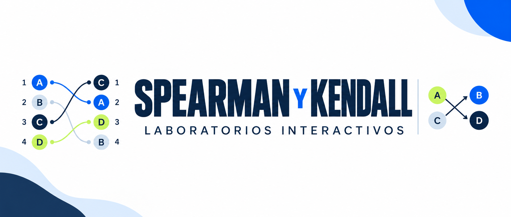

Laboratorios interactivos: Spearman y Kendall

Ya están disponibles dos laboratorios para aprender visualmente cómo funcionan las correlaciones de Spearman y Kendall tau-b. Podrán explorar posiciones en rankings, comparar personas de dos en dos e interpretar qué ocurre cuando cambia la relación entre las variables.
Al final encontrarán una actividad con seis situaciones para elegir el coeficiente adecuado según la pregunta de investigación y las escalas de medición. Los tres recursos están integrados en esta página: pueden utilizarlos directamente, sin abrir otra plataforma.
Recordemos las escalas de medición
Antes de elegir una correlación, revisemos qué información contienen las variables.
| Escala | ¿Qué nos permite hacer? | Ejemplos |
|---|---|---|
| Nominal | Distinguir categorías sin orden. | País, sexo, nacionalidad. |
| Ordinal | Ordenar categorías, sin asumir distancias iguales entre ellas. | Nivel educacional, satisfacción, estatus social subjetivo. |
| Intervalo | Comparar diferencias iguales, sin un cero absoluto. | Temperatura en °C o °F. |
| Razón | Comparar diferencias y proporciones; cero significa ausencia de la cantidad. | Edad, ingreso en pesos, distancia, años de escolaridad. |
Ojo: los números no siempre son cantidades. nivel_educ (categorías ordenadas) es ordinal, mientras que escolaridad (cantidad de años) es de razón.
Spearman: correlación entre rankings
¿Cuándo utilizamos Spearman?
Spearman permite estudiar si las personas que ocupan posiciones más altas en el ranking de una variable también tienden a ocupar posiciones más altas o más bajas en el ranking de otra. Para ello, compara las posiciones de las mismas personas en ambos ordenamientos, en lugar de trabajar directamente con los valores originales. Es útil con variables ordinales y también con variables cuantitativas cuando nos interesa una relación monotónica (al aumentar una variable, la otra tiende a aumentar o disminuir consistentemente, aunque no siga una línea recta).
Por ejemplo, podemos preguntar si las personas con más años de escolaridad tienden a ocupar posiciones más altas en el ranking de ingresos. Spearman evalúa hasta qué punto coinciden o se relacionan las posiciones de cada persona en ambos rankings.
Trabajaremos con cinco personas ficticias. Ambas variables son ordinales: las categorías se pueden ordenar, pero las distancias entre ellas no necesariamente son iguales.
Categorías de X: 1 Básica incompleta · 2 Básica completa · 3 Media incompleta · 4 Media completa · 5 Educación superior.
Categorías de Y: 1 Muy bajo · 2 Bajo · 3 Medio · 4 Alto · 5 Muy alto.
Observe: ¿las personas ocupan siempre la misma posición en ambas variables?
| Persona | Nivel educacional (X) | Estatus social subjetivo (Y) |
|---|---|---|
| A | 1 | 1 |
| B | 2 | 3 |
| C | 3 | 2 |
| D | 4 | 5 |
| E | 5 | 4 |
Lineal: sigue aproximadamente una recta. Monotónica: mantiene una tendencia ascendente o descendente, aunque sea curva.
Exploremos qué hace Spearman
Laboratorio 1 · De valores a rankings
Observa las cinco personas. ¿Quién tiene mayor nivel educacional? ¿Quién tiene mayor estatus subjetivo?
Los mismos casos, dos variables
| Persona | X | Posición en X | Y | Posición en Y |
|---|---|---|---|---|
| A | 1 | 1 | 1 | 1 |
| B | 2 | 2 | 3 | 3 |
| C | 3 | 3 | 2 | 2 |
| D | 4 | 4 | 5 | 5 |
| E | 5 | 5 | 4 | 4 |
Selecciona una persona para seguir sus valores.
Valores originales
Las barras muestran los códigos ordinales 1–5.
Las posiciones altas en un ranking tienden a acompañarse de posiciones altas en el otro, sin coincidencia perfecta.
En esta muestra, \(\rho_s=0{,}80\) indica una asociación positiva elevada entre las posiciones de ambos rankings. Quienes tienen mayor nivel educacional tienden a ubicarse en posiciones más altas en el ranking de estatus subjetivo, aunque las posiciones no coinciden siempre.
Este resultado describe únicamente los cinco casos ficticios. No demuestra causalidad ni permite generalizar a una población.
Kendall: comparación entre pares
¿Cuándo utilizamos Kendall?
Kendall tau-b compara personas de dos en dos: registra si sus órdenes coinciden (pares concordantes), se invierten (discordantes) o presentan empates. Es útil cuando interesa interpretar esas comparaciones, especialmente con escalas ordinales.
Spearman y Kendall pueden ser adecuados para las mismas variables. Los empates no obligan a utilizar Kendall; tau-b ofrece una forma específica de considerarlos.
Exploremos qué hace Kendall
Laboratorio 2 · Comparar dos personas
Cinco personas ficticias; nivel educacional y estatus social subjetivo, con categorías ordenadas de 1 a 5. Kendall las compara de dos en dos: observa si el orden coincide, se invierte o presenta un empate.
Si una persona tiene mayor nivel educacional que otra, ¿también tiene mayor estatus subjetivo?
Observemos dos personas: ¿quién tiene mayor nivel educacional? ¿Quién tiene mayor estatus subjetivo?
Mayor nivel educacional: B · Mayor estatus subjetivo: B.
Concordante: la misma persona tiene una categoría mayor en ambas variables. Discordante: una tiene mayor educación y la otra, mayor estatus. Empate: tienen la misma categoría en una variable o en ambas.
Con cinco personas podemos formar diez pares distintos. Kendall considera las concordancias, discordancias y empates para resumir la asociación.
Pares totales = concordantes + discordantes + empatados: 10 = 8 + 2 + 0.
8 − 2 = 6; 6/10 = 0,60.
0,600 no significa 60% de pares concordantes: son 8 de 10, es decir, el 80%.
¿Cómo se ajusta Kendall cuando hay empates?
τb = (C − D) / √[(C + D + TX)(C + D + TY)]
C: pares concordantes; D: discordantes; TX: empates solo en nivel educacional; TY: empates solo en estatus. Los empates en ambas variables no se suman a TX ni a TY.
Ver los 10 pares y su clasificación
| Par | Nivel educacional | Estatus subjetivo | Tipo |
|---|---|---|---|
| A–B | A < B | A < B | Concordante |
| B–C | B < C | B > C | Discordante |
En el escenario original, \(\tau_b=0{,}60\) indica una asociación ordinal positiva. De diez pares posibles, ocho son concordantes y dos discordantes: habitualmente, quien tiene mayor nivel educacional también ocupa una categoría mayor de estatus subjetivo.
Importante: 0,60 no significa 60% de pares concordantes. Aquí son 8 de 10. El coeficiente tampoco demuestra causalidad ni debe compararse directamente con el valor de Spearman.
Kendall tau-b compara todos los pares de personas y los clasifica como concordantes, discordantes o empatados. Si dos personas tienen el mismo valor en una variable, ese par se considera un empate: no suma como concordante ni como discordante. Sin embargo, tau-b tiene en cuenta esos empates al ajustar el denominador de su fórmula. Así, el coeficiente refleja la asociación entre ambas variables considerando que algunos pares no pueden ordenarse completamente.
¿Cómo elegimos el coeficiente?
Spearman y Kendall permiten estudiar asociaciones entre variables ordenadas, pero utilizan procedimientos diferentes:
Spearman: lo elegimos cuando queremos saber si las personas que ocupan posiciones más altas en una variable también tienden a ocupar posiciones más altas (o más bajas) en otra. Para ello, compara las posiciones asignadas a las observaciones en dos rankings.
Kendall tau-b: lo elegimos cuando nos interesa comparar personas de dos en dos y observar si sus posiciones coinciden (concordancia), se invierten (discordancia) o presentan empates. Es especialmente útil con variables ordinales de pocas categorías, donde pueden existir muchos empates.
¿Podemos utilizar ambos? Sí. Los dos son adecuados para estudiar asociaciones ordinales. La elección depende de qué queremos analizar y de las características de los datos. Los empates no obligan a usar Kendall, pues Spearman también puede trabajar con posiciones empatadas (asignando la posición promedio a las observaciones en empate).
En nuestros cinco casos, Spearman = 0,80 y Kendall = 0,60. Los resultados son distintos porque cada coeficiente resume el orden de manera diferente. No debemos comparar directamente sus valores para concluir que uno muestra una asociación más débil que el otro.
¿Cuándo conviene cada coeficiente?
Reconocer la escala es el primer paso. Después debemos considerar qué relación queremos estudiar.
| Coeficiente | ¿Cuándo conviene utilizarlo? |
|---|---|
| Pearson | Para estudiar una relación lineal entre variables cuantitativas. |
| Spearman | Para estudiar si las posiciones en dos rankings tienden a aumentar o disminuir juntas. |
| Kendall tau-b | Para estudiar la concordancia entre pares, considerando también los empates. |
Recuerda: la escala de medición orienta la elección, pero no determina por sí sola el coeficiente.
¿Qué correlación utilizarías?
En cada situación, clasifica X e Y (nominal, ordinal, intervalo o razón) y elige un coeficiente. La explicación indicará si existen otras respuestas válidas.
Reconoce las variables
Recorrido completado
Para elegir una técnica, revisa las variables y la pregunta. Pearson estudia linealidad; Spearman, posiciones en rankings; Kendall, pares. Para comparar categorías sin orden, comienza con una tabla.
Intervalo: temperatura en °C; las diferencias son comparables, pero cero no es ausencia de temperatura.
Actividad sin nota. Al terminar puedes continuar con la aplicación de correlaciones en R del Práctico 8.